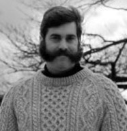
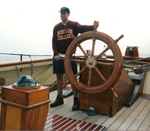

Hello! Here's a quick overview of my employment and education history.
- 2005 - 2015: Nonprofit development career; currently a Director of Development.
- 2004 - 2005: Full-time emergency medical technician in NYC.
- 2002 - 2003: Web designer/manager for Teamsters Locals 808 and 805.
- 2000 - 2002: Sunglass store manager in St. Croix, US Virgin Islands.
- 1999 - 2000: Account executive for a communications agency in NYC.
- 1998 - 1999: Fullbright fellow; spent Fullbright year in Kiel, Germany.
- 1994 - 1998: Boston College; cum laude wtih B.A. in Modern European History.

Here are some fun facts about me:
- That's me at the helm of the Pride of Baltimore II, a traditional topsail schooner, where I was a "guest crew member" for three days.
- Played electric bass in a country western band while living in the US Virgin Islands.
- Motorcycle enthusiast recently turned ex-motorcycle enthusiast (care to buy my Harley Sportster 1200?).
- Just started fourth year of learning Krav Maga, the Israeli self-defense system.
I look forward to talking with you about building this page.
I can be reached at:
- jeffreyeaton.dc@gmail.com
- (917) 846-3997